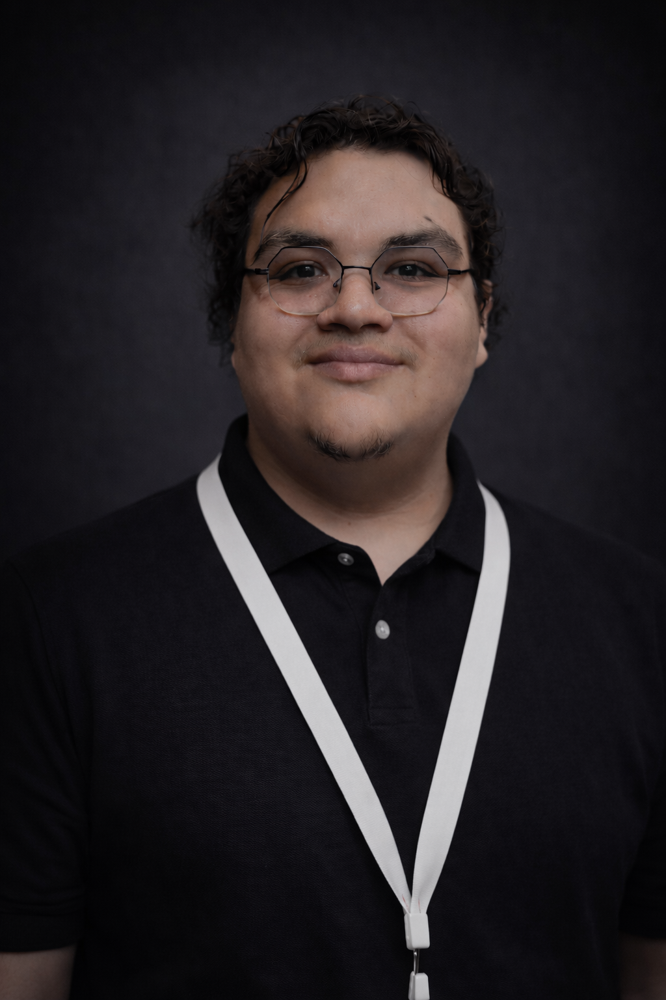
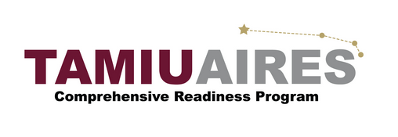
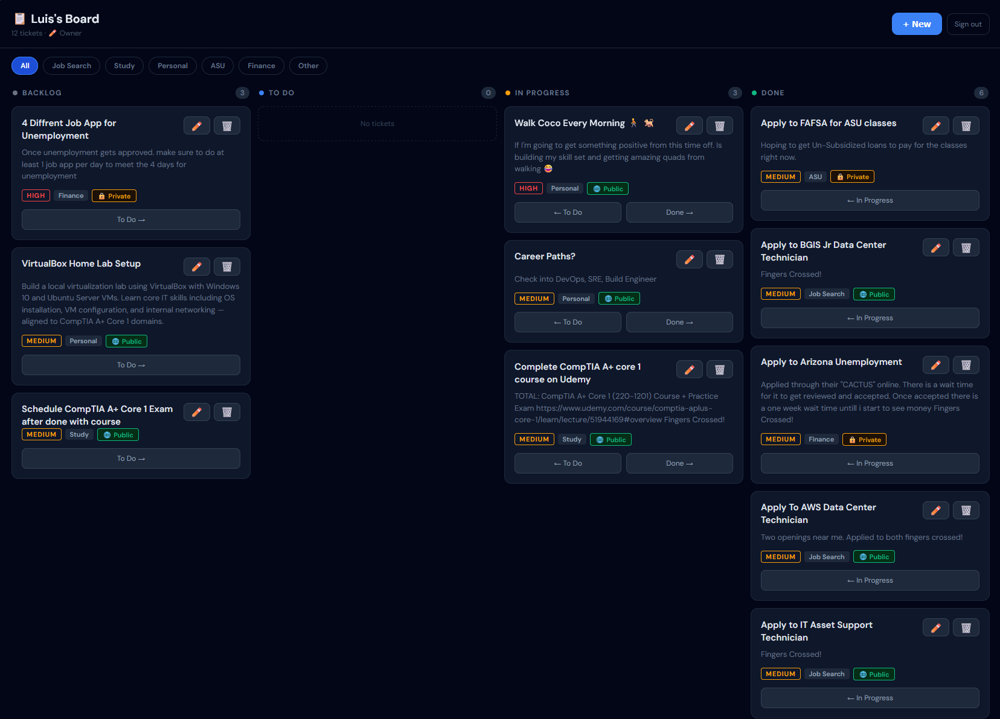
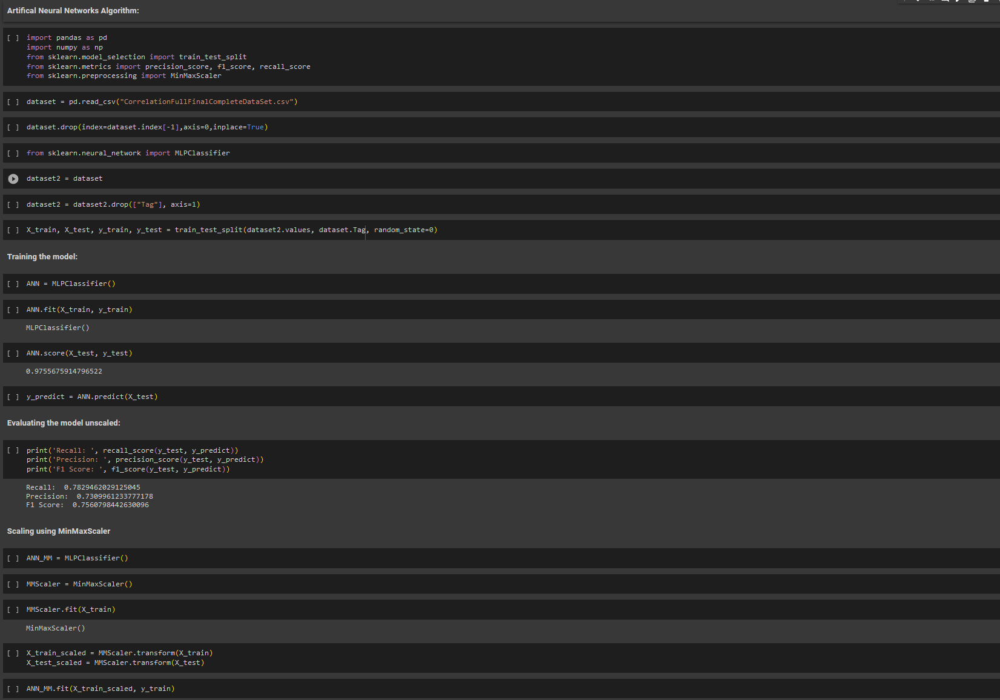
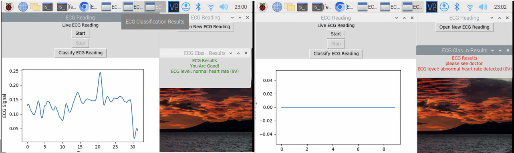
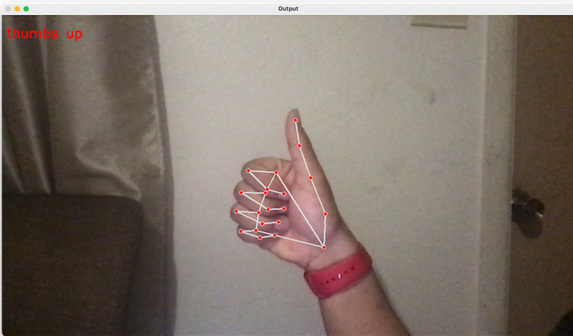
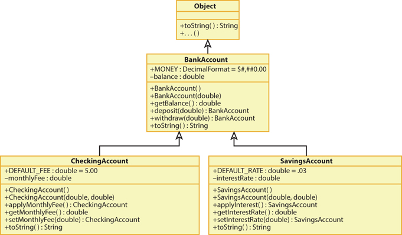

Computer Engineer · IT Infrastructure · Cybersecurity
I've been building things with my hands since I can remember — robotics, PCs, code. After 2 years shipping production software at Wells Fargo, I'm ready to go deeper into the systems that make it all run. Looking for a Software or IT role where I can keep growing — while working toward a long-term career in cybersecurity through my MS in Computer Science at ASU.

// 01. about
I'm a Computer Engineer from Texas A&M International University with two years of production experience at Wells Fargo, where I worked on Java Spring Boot microservices, Kafka data pipelines, OpenShift container infrastructure, and CI/CD automation.
I've always been a hands-on builder — high school robotics, PC building, 3D printing, console modding — and software was the latest chapter. Now I'm deliberately pivoting into IT infrastructure and cybersecurity, where that systems-first mindset truly fits.
I'm enrolled in my MS in Computer Science with a Cybersecurity concentration at Arizona State University starting Summer 2026, and actively building fundamentals through home lab work and CompTIA certifications.
// CURRENTLY
// 02. experience

// 03. skills
Languages
Backend & Cloud
DevOps & CI/CD
Observability & Tools
IT & Infrastructure
Certifications
// 04. projects





// 05. contact
I'm actively looking for IT Infrastructure, DevOps, and Entry-Level SRE, Junior SWE Roles in the Phoenix metro area. If you're hiring or just want to talk tech — I'm always open.